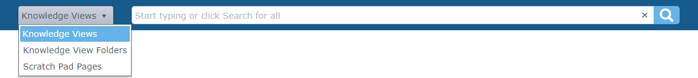
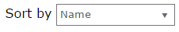
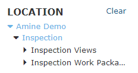

Knowledge Bookを検索
ナレッジビュー、ナレッジビューフォルダ、またはスクラッチ パッド ページを検索できます。

検索文字列を入力すると、入力した文字列を含むナレッジビュー、フォルダ、またはスクラッチ パッド ページの検索候補がドロップダウンに表示されます。ドロップダウンには、最初の 5 つの検索候補が表示されます。
検索候補のいずれかをクリックするか、検索をクリックします ボタンをクリックして検索を実行します。検索では大文字と小文字は区別されず、入力した文字列を含むすべてのナレッジビュー、フォルダ、またはスクラッチ パッド ページが検索されます。
ボタンをクリックして検索を実行します。検索では大文字と小文字は区別されず、入力した文字列を含むすべてのナレッジビュー、フォルダ、またはスクラッチ パッド ページが検索されます。
検索文字列フィールドを空のままにして検索ボタンを押すと、利用可能なすべてのナレッジビュー、フォルダ、またはスクラッチ パッド ページが返されます。 |
検索文字列をクリアするには、検索コントロール内の検索ボタンの横に表示される×ボタンをクリックします。
検索結果ビュー
検索結果は検索結果ビューに表示されます。このページには、指定された検索タイプ (ナレッジビュー、ナレッジビューフォルダー、またはスクラッチ パッド ページ) の結果のみが含まれます。デフォルトでは、検索結果は名前順に並べ替えられます。

| 検索結果ページには、表示アクセス権を持つデータのみが表示されます。 |

仕分け
[並べ替え基準] リストで別の並べ替えフィールドを選択することで、検索結果の並べ替え順序を変更できます。
- ナレッジビューとフォルダーの場合、結果を名前、場所、または変更日のいずれかで並べ替えることができます。
- スクラッチ パッドの検索結果の並べ替えオプションには、スクラッチ パッド (名前)、ナレッジビュー(名前)、場所、および変更日が含まれます。

表示モード
デフォルトでは、ページにはアイコンビューを介して検索結果が表示されます。ビュー タイプアイコンのいずれかをクリックすると、さまざまな表示モードを切り替えることができます。
ビューモード | ビューに表示される内容 |
アイコンビュー |
|
|
|
|
|


表示モードに関係なく、検索結果の 1 つをクリックすると、ナビゲーション アクションが実行されます。
- ナレッジビューフォルダーをクリックすると、フォルダーのコンテンツに移動します。
- ナレッジビューをクリックすると、ナレッジビューが開きます。
- スクラッチ パッド ページをクリックすると、そのページが開きます。
グリッド ビューで、ナレッジビューアイコンの上にマウス カーソルを置きます。 同様に、スクラッチ パッド グリッドで、スクラッチ パッド ページアイコンの上にマウスを置きます。 |


検索結果フィルター
結果にフィルターを適用することで、検索結果を微調整できます。
- ナレッジ ビューとフォルダーは場所ナレッジビューのみフィルターできます。
- スクラッチ パッド ページの結果は、 [場所] 、 [変更者 (ユーザー)] 、および[変更日]でフィルタリングできます。
位置
場所でフィルターするには、場所フィルターから目的の場所を選択します。
- 1 つの場所でのみフィルタリングできます。
- 場所を選択すると、検索結果ビューが自動的に更新されます。
- [クリア]リンクをクリックして、場所フィルターをリセットします。

によって変更
最後に変更したユーザーでフィルターするには、「変更者」ドロップダウンからユーザーを選択します。
- Modified By フィルターは、スクラッチ パッドの検索結果でのみ使用できます。
- フィルタリングできるのは 1 人のユーザーのみです。
- @meを選択すると、現在サインインしているユーザーによってフィルターされます。
- リストからユーザーを選択すると、検索結果ビューが自動的に更新されます。
- ドロップダウン コントロール内の十字ボタンをクリックして、ユーザー フィルターをリセットします。

日付が変更されました
最終更新日でフィルターするには、[更新日] コントロールで日付範囲を指定します。
- 変更日フィルターは、スクラッチ パッドの検索結果でのみ使用できます。
- コントロール内のカレンダーアイコンをクリックすると、日付ピッカー ユーザー インターフェイスが表示され、カレンダー コントロールを使用して開始日と終了日を選択できます。
- 新しい日付範囲を指定すると、検索結果ビューが自動的に更新されます。
- ドロップダウン コントロール内の十字ボタンをクリックして、日付範囲フィルターをリセットします。

PDF にエクスポート
スクラッチ パッド グリッド ビューでは、1 つ以上のスクラッチ パッド ページを PDF ドキュメントにエクスポートできます。エクスポート機能を有効にするには、エクスポートするスクラッチ パッド ページの横にあるチェック ボックスをオンにします。

少なくとも 1 つのチェック ボックスをオンにすると、検索結果の上に[PDF にエクスポート]ボタンが表示されます。
[PDF にエクスポート] ボタンをクリックすると、選択したスクラッチ パッド ページを含む PDF ドキュメントのダウンロードが開始されます。スクラッチ パッドの各ページは、PDF 内の別のページにレンダリングされます。
生成された PDF ドキュメントのレイアウトは、次の PDF エクスポート オプションを変更することでカスタマイズできます。
- ページ サイズは、 PDF の生成時に標準化された用紙サイズのどれが使用されるかを決定します。利用可能なページ サイズの選択肢には、国際 (A4、A3 など) および北米 (レター、リーガルなど) の用紙サイズが含まれており、デフォルトはA4です。
- ページの向きでは、 PDF に追加されるページの向きを指定できます。
- 自動(デフォルト) - スクラッチ パッド ページの寸法に基づいて、エクスポートされる各ページの向きを自動的に設定します。
- 横向き - すべてのページを向きでエクスポートする場合に選択します。
- 縦 - すべてのページを縦向きでエクスポートする場合に選択します。
共有
検索条件やフィルター条件を共有できます。アプリケーション ヘッダーの [共有]アイコンをクリックして、検索とフィルターを実行するための URL をコピーまたは電子メールで送信します。